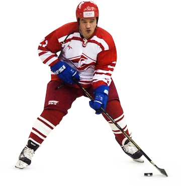

После двух сезонов в высшей лиге «Спартак» осенью 2001 навёл шороху в Суперлиге. Тренер Николай Соловьёв и ударная тройка Волков — Зиновьев — Гоголев при поддержке ветеранов Ткачука и Болдина устроили настоящую «болдинскую осень», как её нарекли в СМИ. Красно-белые одно время возглавляли таблицу чемпионата и уверенно шли в кубковой восьмёрке. Всё изменилось после матча 2 декабря, когда «Спартак» на последних минутах упустил победу в матче с «Динамо» (1:1). Не помогли и усилия голкипера Константина Симчука, который умел вовремя сдвинуть ворота. Говорят, что тогда отец певицы Алсу Ралиф Сафин принёс в раздевалку красно-белых 20000 долларов, но руководство «Спартака» велело отдать деньги не на премиальные, а в кассу клуба. Плюс в паузе, когда все отдыхали и готовились, красно-белые отправились в турне по Италии. В общем, из последних 14 матчей команда Соловьёва выиграла лишь один — в Нижнем Новгороде. О плей-офф пришлось забыть.
победитель
чемпионата
Москвы-2001
Сезон-2002/2003 под руководством Сергея Шепелева ознаменовался вылетом команды из Суперлиги. Впрочем, для возвращения обратно хватило одного сезона. «Спартак» легко разбирался с соперниками по «вышке», но занял лишь второе место, уступив в финале плей-офф пермскому «Молоту». Но в Суперлигу выходили две команды, так что этот результат ни о чём не говорит.
Осень 2004 года принесла две новости. Сначала из-за аэрофобии завершил карьеру голкипер Олег Глебов. В отличие от матчей «вышки», где можно было ездить на выезд автобусом и поездом, последователь знаменитого голландского футболиста Денниса Бергкампа не смог пересилить свой страх летать самолётами в Суперлиге. Затем был избит недалеко от дома форвард Анатолий Устюгов, скончавшийся не приходя в сознание в реанимации Первой Градской больницы. Говорят, что пришедший из хабаровского «Амура» игрок пострадал из-за женщины. Не задавшийся сразу сезон так неудачно и завершился — «Спартак» не мог выиграть с 5 января. Благо, никто не вылетал. Были, правда, и яркие матчи — в одном из таких «Спартак» обыграл дома казанцев или, как их тогда называли, «Ак Барс Рейнджерс». В год локаута в НХЛ в Казань приехали Илья Ковальчук, Дэни Хитли, Венсан Лекавалье, Брэд Ричардс, Николай Хабибулин и другие звёзды. В итоге на дубль Ковальчука красно-белые ответили хет-триком Михаила Иванова.

Валерий Брагин
тренировал
«Спартак» с 2005 по
2007 годы
Сезон-2005/2006 под руководством Валерия Брагина получился ярким и принёс «Спартаку» выход в плей-офф после семилетнего перерыва. Канадские легионеры красно-белых Дэвид Линг и Тайлер Мосс вели команду за собой. Спартаковские болельщики тогда переиначили западную поговорку в честь голкипера Мосса. «In Moss we trust» — скандировали с трибун «Сокольников». Линг же стал лучшим бомбардиром команды — он и забивал, и отдавал, и дрался. К сожалению, в плей-офф «Спартаку» не удалось переиграть уфимский «Салават Юлаев».